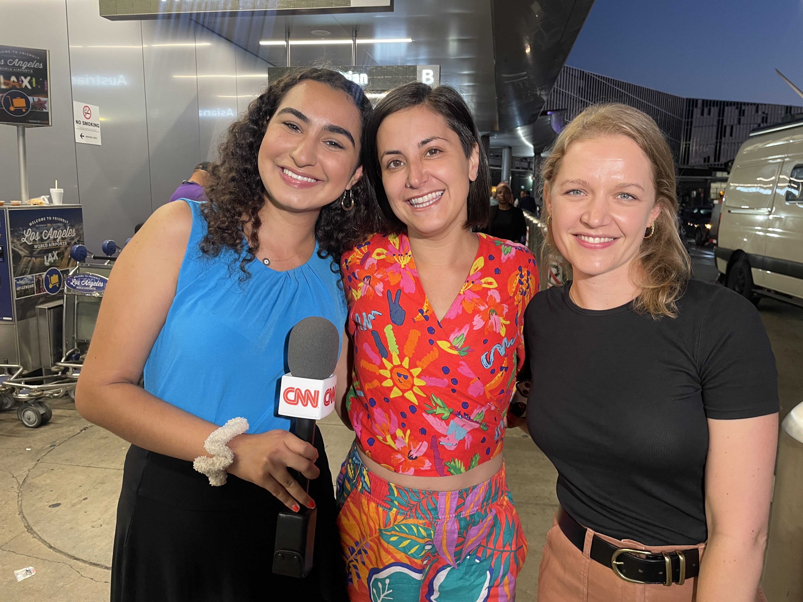
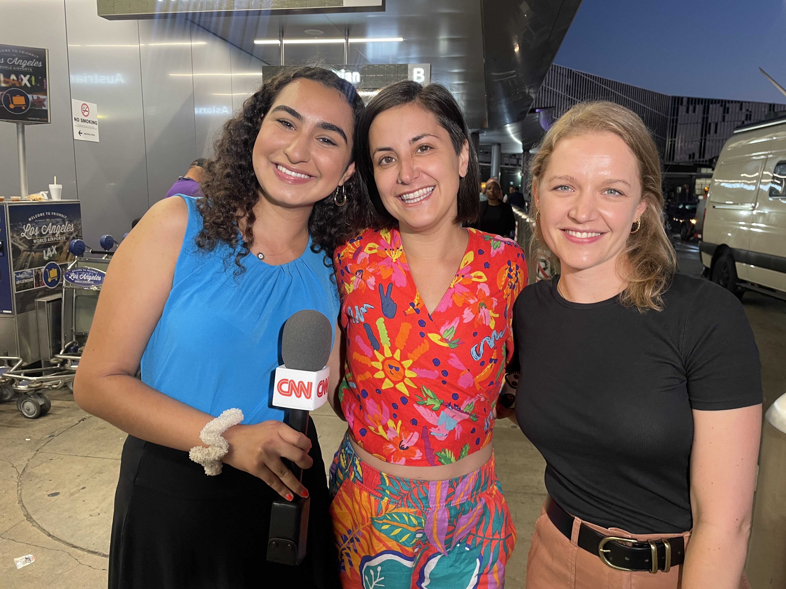

👋 My name is Nadia Bidarian, a sophomore at Northwestern University with a deep passion for technology and business. I'm a Data Science, Journalism & Cognitive Science student published in CNN and CNN Business.
I'm particularly drawn to the challenges and opportunities in data analysis, product design, and management consulting. I thrive in environments that demand critical thinking and innovative solutions.
I am looking forward to expanding my experience in leveraging data and analytics to drive business strategies and decision-making.
 
